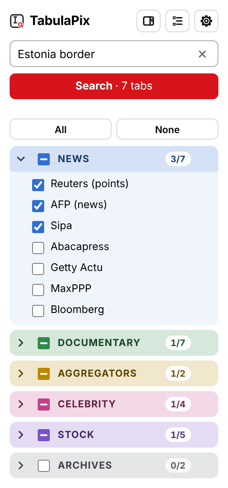

One search, all your picture agencies
Type your keywords once: TabulaPix opens each agency in its own tab, results ready, with your own accounts.
For photo desks, picture researchers and photo editors who search the same words on ten sites all day long.
For Chrome on a computer. Open source, no data collected; a subscription to each agency is still required. On install, Chrome asks to “read your browsing history”: this is to reuse an agency tab that is already open.
 TabulaPix
TabulaPix- News3/7
- Documentary1/7
- Aggregators1/2
- Celebrity1/4
- Stock1/5
- Archives0/2
How it works
- Tick your agenciesNearly thirty agencies and picture libraries come ready, sorted into coloured folders: news, documentary, aggregators, celebrity, stock, archives. Keep the ones you subscribe to.
- Type your keywords, onceIn the extension's window: click its icon, or press Alt + Shift + Y. To chain searches, keep it open as a column on the right of the page.
- Press EnterOne tab per agency opens in the background. An agency tab already open is reused instead of opening one more.

Your agencies, sorted your way
Rename, recolour and reorder your folders; hide the agencies you don't use.
Yours is missing? Paste the address of a results page: TabulaPix finds where the keywords go. If the site doesn't put them in the address, it locates its search field and fills it in for you.
Share with a colleague
Share an agency or a whole folder with a short code, to paste into Slack, Teams or an e-mail. Your colleague pastes it into TabulaPix: what they are missing is added, nothing of theirs is removed or changed.
The configuration also exports to a file; on import, TabulaPix shows what will change before applying it.
TabulaPix:1:H4sIAAAAAAAAA3WOwQrCMBBEf2Xp…example share code
Nothing leaves your computer
- No server, no account. TabulaPix runs entirely in your Chrome.
- Nothing is sent elsewhere. The extension only opens tabs, as if you typed the address yourself; its security settings forbid any other connection.
- No data collected. Your settings stay in Chrome, on your computer. Only the last search is kept.
- A single permission announced on installation: “Read your browsing history”, to reuse an agency's tab that is already open. The others are only requested if you tick an agency that needs one, and for that site only.